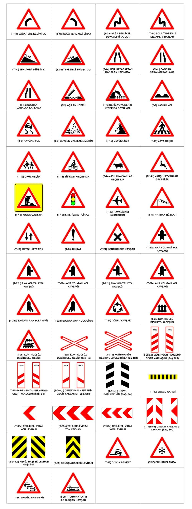
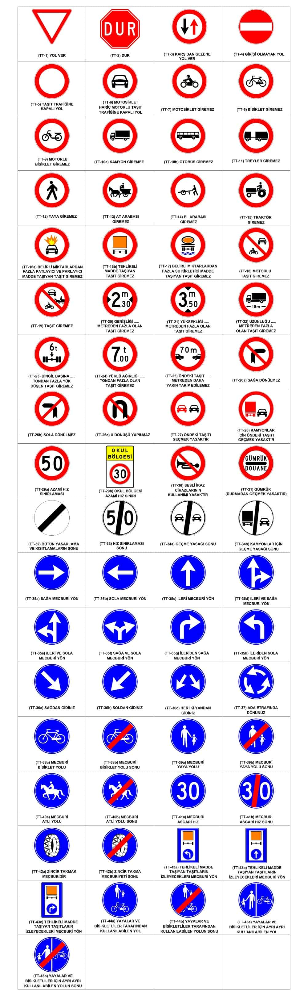
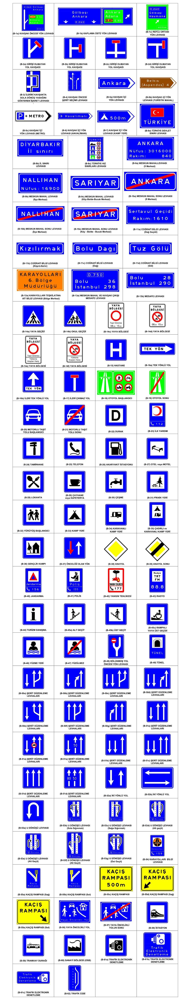
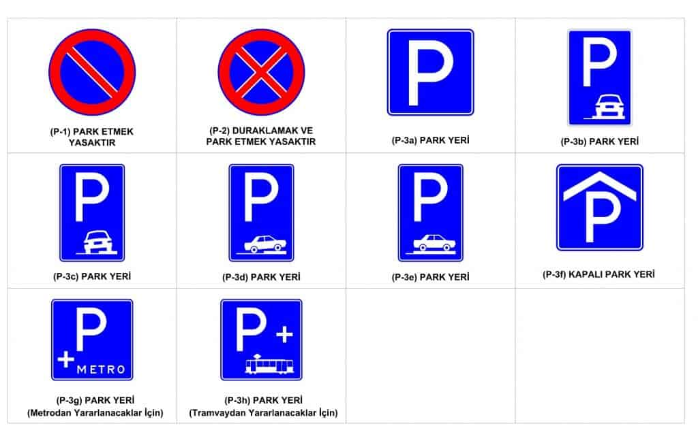
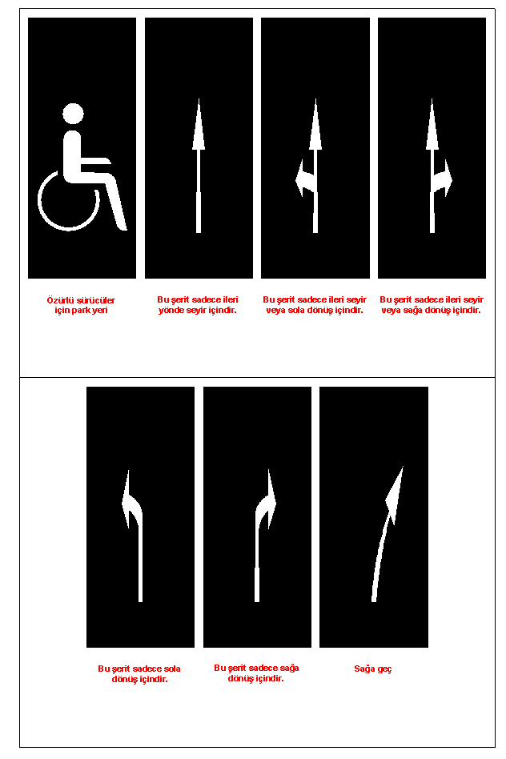

Bu yol işaretleri araç sürücülerini olması muhtemel trafik kazalarına ve tehlikelerine karşın bilgilendirmek amaçlı
olarak geliştirilen trafik levhalarıdır. Olması muhtemel kazaları engellemek için trafikte hayati önem taşırlar ve
bu işaretleri takip etmek çok önemlidir. Toplamda 52 adet işaretten oluşmaktadır. Bunlardan en sık rastladığımız
levhalar başlıca sağa viraj, sola viraj, u dönüşü, sağa dönüş yasak, sola dönüş yasak vb. olarak
gösterilebilir.

Bu grupta yer alan trafik levhaları daha çok trafikte düzeni sağlamak ve sürücüyü bilgilendirmek amaçlı
geliştirilmişlerdir. Bu grupta toplam 69 adet farklı yol işaret levhası bulunur. Bu levhaları takip edersek trafik
kurallarına daha çok riayet etmiş oluruz ve trafikte gideceğimiz yönleri daha iyi tayin ederiz. Bu işaretlerden
başlıcalarıda yükseklik ve ağırlık limitlerini gösteren tabelalar, mecburi yön tabelaları, maksimum genişlik
gösteren tabelaları ve giriş ve dönüş kısıtlaması ve yasakları tabelalarıdır.

Bu grupta yer alan tabelalarda daha çok sürücüye yol hakkında bilgiler veren ve yol üzerinde bulunan yerleşim yerleri
, kurumlar, il sınırları gibi bilgileri içeren tabelalardır. Bu grupta toplam 112 adet yol işaret levhası bulunur.
Bu tabelalardan başlıcalarıda il sınırı ve il sınırı bitişi, hastane, petrol, kamp yerleri, otopark, hız sınırı gibi
tabelalardır.

Bu gruptaki trafik işaretleri sürücüye nerede park edebileceği, nerede durup nerede duramayacağı gibi bilgiler veren
trafik levhalarıdır. Bu grupta toplam 10 adet levha vardır. Bu levhalar daha çok park levhalarından
oluşmaktadır.

Bu gruptaki işaretler trafik işaret levhası halinde değil, yol üzerinde bulunan ve sürücülere bilgi veren
işaretlerdir.Toplamda 23 farklı işaretten oluşur.
